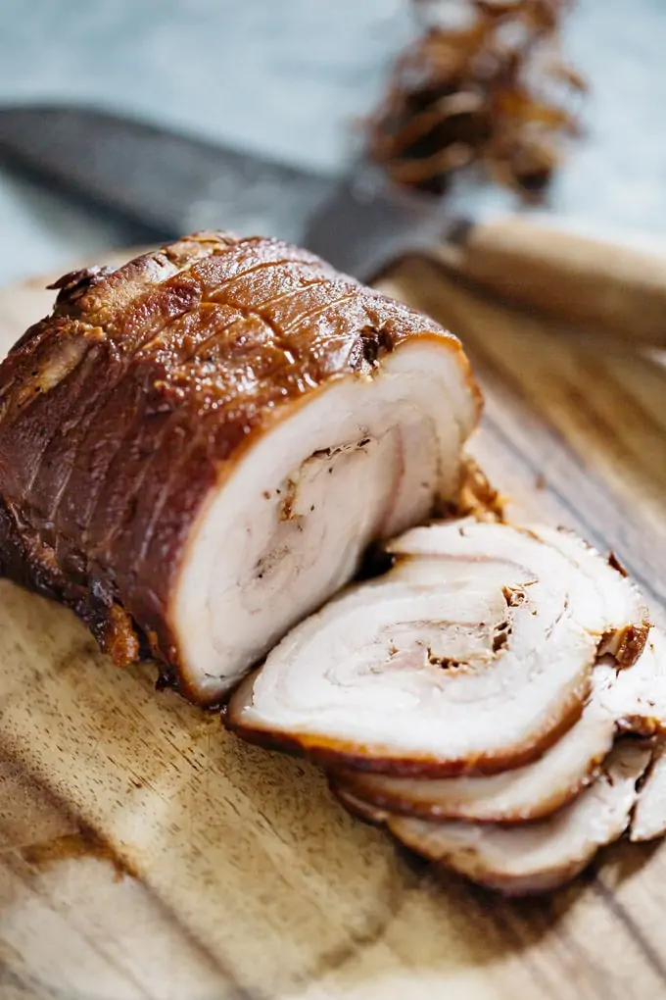

Pork Chashu

What is chashu?
Typically served with ramen, chashu is
pork braised in a soy sauce base.
This recipe calls for pork belly, which has an even
fat distribution that, when rendered properly, leads to
a melt in your mouth texture. I usually buy a large slab
of pork belly from Costco and freeze whatever portion
I'm not using.
Ingredients
- 1.8-2.2lbs / 0.8-1kg pork belly
- 2 tbsp cooking oil
- 1 cup soy sauce
- 1/2 cup sugar
- 1/2 cup sake
- 1/4 cup honey
- 3 cups water
- 2-3 scallions
- 1 knob of ginger (about 20g/0.7oz)
- 2 cloves garlic
Instructions
- Take pork belly out of fridge 30 minutes before cooking.
- Cover pork with plastic wrap and tenderize by pounding it with a rolling pin or meat mallet
- Season the pork with salt and pepper.
- Roll the slab of pork belly into a cylindrical shape.
- Tie up pork belly tightly with cooking string so the meat holds its shape.
- Heat oil in frying pan and brown the outside of the pork belly on all sides (including the rolled up edges)
- Transfer pork belly into simmering water (water not included in ingredients list). You need
enough water to just cover the pork belly. Cook for one hour over low heat.
- Skim the excess fat that accumulates on the surface of the water. This will remove
the unpleasant odors and flavors from the pork belly.
- Drain the water, leaving the pork belly in the pot.
- Add sugar, sake, soy sauce, water, scallions, ginger, and garlic into the pot, bringing it to
a boil before turning down the heat to low. Place a drop lid (otoshibuta) over the ingredients and
simmer for one hour.